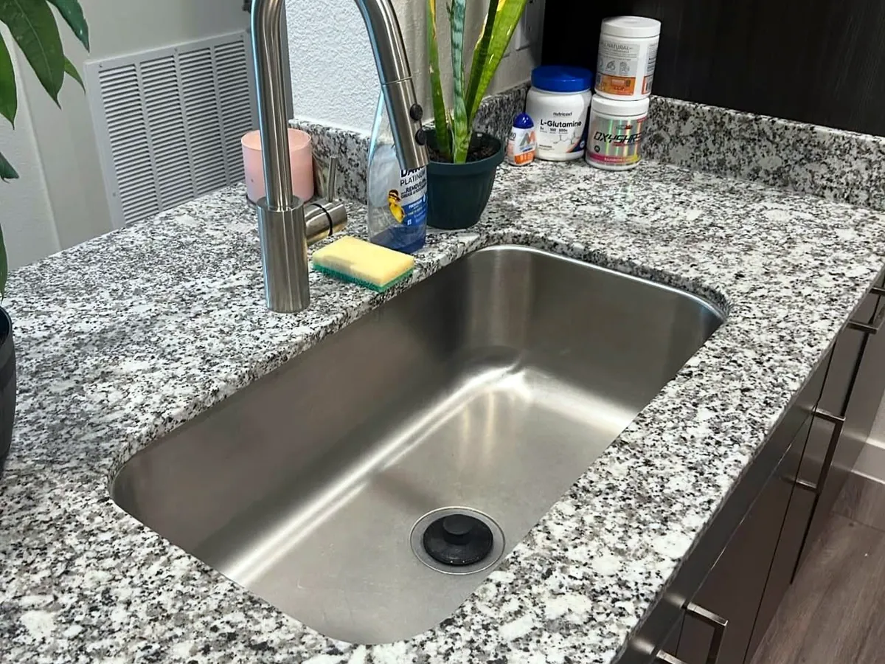

Recurring House Cleaning in Middleton
Homes with kids and pets off Route 114 stay on track with weekly or biweekly visits on a set day.
Starting at $150 per visitBiweekly visits
recurring house cleaning in MiddletonBetween the farms, the ice cream stand everyone loves and the newer neighborhoods off Route 114, Middleton keeps growing. Whether you just moved into a brand new home or have lived here for years, we will keep it spotless.

Just bought a newly built home? Construction leaves fine dust in cabinets, on window tracks and along every baseboard. Our move in cleaning removes it before your furniture arrives, so you start fresh.
Middleton sits right next to Danvers and Peabody, where we are based. That means reliable arrival times and easy recurring scheduling for Middleton families.
Homes with kids and pets need more frequent attention in kitchens, floors and bathrooms. A weekly or biweekly plan keeps up with daily life so you do not have to.
Our team is based in Peabody and cleans homes across Middleton and the surrounding area, including Danvers, Topsfield and North Reading. Tell us your street when you request a quote and we will confirm your spot on the schedule.
Homes with kids and pets off Route 114 stay on track with weekly or biweekly visits on a set day.
Starting at $150 per visitBiweekly visits
recurring house cleaning in MiddletonA first deep clean catches the dust in vents, window tracks and baseboards that a busy year leaves behind.
Starting at $340
deep cleaning in MiddletonJust closed on a new build? Our move-in clean removes the fine construction dust before the furniture arrives.
Starting at $300
move-in / move-out cleaning in MiddletonA one-time clean after a busy stretch, with kitchens, bathrooms and floors done room by room.
Starting at $170One-time visit
standard cleaning in MiddletonTell us about your home and the service you need. We reply with a clear price and the next available date in Middleton.
Tell us about your home. We reply with a clear price, no obligation.
Yes. A move in clean for new construction removes the fine dust left behind by the builders, inside cabinets and closets, on window tracks and along baseboards.
Yes, along with the older homes near Middleton Center and the rest of town.
Yes. Weekly cleaning is a great fit for busy homes, with extra attention to floors, kitchens and bathrooms.
Fill out the form on this page or call (978) 239-2635. Tell us the size of your home and the service you want, and we reply with a clear price.
Yes. Owl Cleaning Co. is a local, owner-led maid service with recurring, deep and move in/out cleaning for homes in Middleton, MA.
Request your quote in minutes. Just tell us about your home.